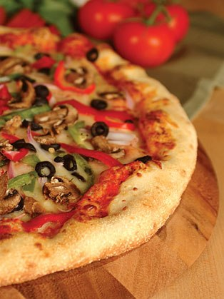

|
PIZZA CORNER From mouse to house in minutes...
OUR MISSION WOW every Guest by serving an innovative range of delicious high quality pizzas in a fun, friendly, and comfortable environment. THE CORE IDEA The core idea is great tasting, wholesome food. In many varieties that range from innovative pizzas with an array of choices including Hand tossed crust, Italian crust, Deep Pan and Sicilian among others as well as appetizers, pastas, salads, bakes.All available at Dine-Ins, Delivery and Express Counters. THE PIZZA CORNER EXPERIENCE No expense is spared while delivering the Pizza Corner Experience. We call it a holistic customer experience that offers a place to relax,enjoy good food and be oneself in a fun environment.Every detail is seen to, from a well-trained, solicitous GuestCarestaff the carefully chosen music. The ambience, décor and uniforms too have been painstakingly conceptualized to bring out vibrancy ofevery outlet. Each of them has a particular theme that is enjoyable and friendly such as Basketball, Adventure Sports, Movies and The concept of Open Kitchens allows our guests to see for themselves the clean,healthy environment we prepare food in.The mostsophisticated American Conveyor Ovens make sure our hand tossed pizzas are baked to perfection, giving consumer unmatched experience. To add to this, every process is streamlined and only ingredients of superlative quality are used.Here, we,Pizzares also pride ourselves on adaptability, so when in India, we don't serve beef or pork but offer the best of the taste. WELCOME TO THE WORLD OF PIZZA CORNER!!! |
 |